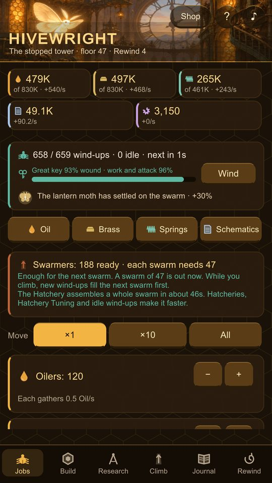
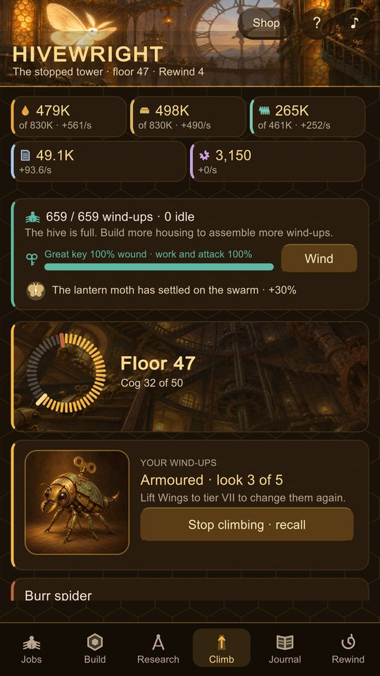
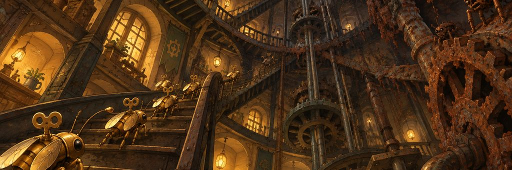
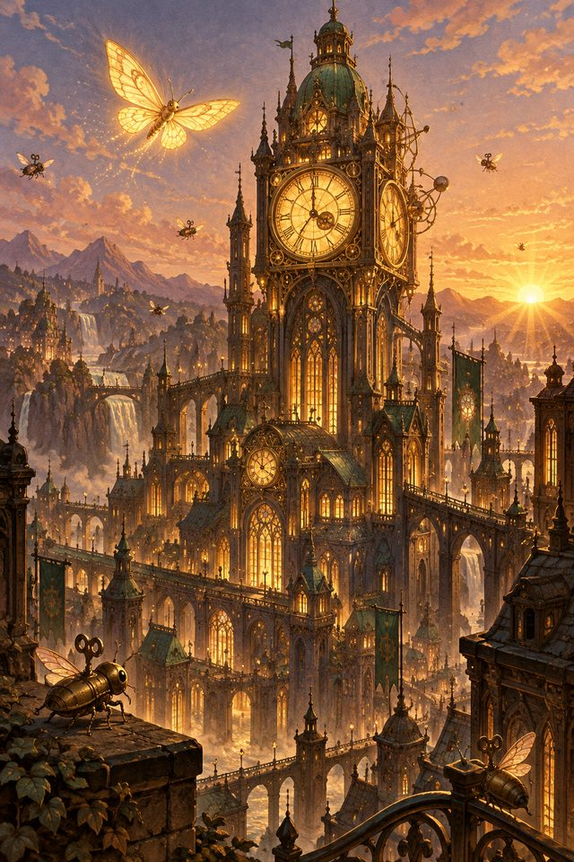

Hivewright
Idle incremental game · AndroidWake the hive. Climb the tower. Start the clocks again.
- Getting started
- How the climb works
- Wind-ups, jobs and the great key
- Build and research
- Equipment and expeditions
Deep inside a clock tower whose great mainspring ran down long ago, a hive of tiny clockwork insects is waking up. The Rust has crept over every floor.
Hivewright is an idle and incremental game for Android. You gather by hand, build homes, wake wind-ups and give each one a job. Soon the hive runs itself, even while the phone is in your pocket. Then you send swarms up the tower, floor by floor, past the Rust and the Gatekeepers that guard each level, towards the heart of the clock.
The hook
- A hive that works while you are away. Your wind-ups keep gathering, and the swarm keeps climbing, when you close the game. A welcome-back summary shows what the hive earned.
- A tower with no top. Every hundred floors a great clock is restarted, and the tower keeps rising.
- Rewind. From floor 20 you can wind time back, start the hive again and keep permanent perks, so every run climbs further than the last.
- A key that matters. The hive's great key slowly unwinds. A wound hive works and fights harder, so tapping still has a point long after the first minutes.
- No account, no internet needed. Play offline, at your own pace.
How a session feels
A short visit is a handful of taps, a few new wind-ups, a quick check on the climb and a decision about what to spend. You might wind the key, build a Cell, study a new schematic or pick one of three Salvage finds after a Gatekeeper falls. A long visit is more of a plan: which perks to buy before the next Rewind, which Trial to try, which side chamber might hold the next equipment pattern.
The hive teaches you as you go. The lantern moth suggests one goal at a time and moves on by itself when you meet it, which is how the first ten minutes go.
The world
The windows are honeycomb and glow amber. The music is a soft music-box melody with ticking in the background, and it gains layers as the hive grows.
The wind-ups themselves change as you equip them. A newly made beetle is plain brass; later it grows mandibles and a stinger, armour, glass-and-brass wings and, much later, a veteran's harness. See Equipment and expeditions for how each look arrives.
The moth
A lantern moth made of living light lives with the hive from the first minute. It flits to whichever part of the hive is busiest, and its light makes that work go faster. It chooses where it goes, not you, and it glows brighter every time a great clock restarts. It cannot be bought, fed or upgraded. More on the lantern moth.
Where to go next
| If you want to... | Read |
|---|---|
| Play your first session | Getting started |
| Understand fighting and floors | How the climb works |
| Plan a Rewind | Rewind and perks |
| Climb faster | Tips for fast progress |
| Look something up | Glossary and FAQ |
Note Pages marked as containing spoilers describe later parts of the game: Gatekeepers, curios, the Loft and the Grand Winding. Everything else sticks to what the early screens already show.
Hivewright is made by BlairsLab. It is available in English, Dutch, French, German, Spanish, Portuguese, Italian, Russian, Japanese, Korean and Chinese, and credits the incremental game Trimps as an inspiration.
Start here

Getting started
Your first ten minutes in the hive, step by step, following the lantern moth's goals.
Guides

How the climb works
Floors, cogs, swarms and Swarmers: how your wind-ups fight their way up the tower.

Wind-ups, jobs and the great key
How wind-ups are made, what each job does, and why keeping the great key wound matters.
Build and research
Every building and research in the hive, what it does and when it appears.

Equipment and expeditions
Five pieces of wind-up equipment, the patterns that lift them a tier, and the side chambers where patterns are found.
Salvage
Every tenth floor the Gatekeeper leaves three finds, and you keep one for the rest of the run.
Tips for fast progress
Practical habits for early runs, stalls, Rewinds and long idle stretches.
Systems

Rewind and perks
Wind time back from floor 20, keep your Aether, and spend it on permanent perks so every run climbs further.
Trials
Optional challenge runs that bend one rule of the hive, with stars to earn and permanent Aether bonuses.

The lantern moth
A moth of living light that settles on the busiest part of your hive and makes it work faster.
Helpers and automation
Five helpers you earn by climbing, each one a switch that takes over a chore while you play.
Offline progress and optional boosts
How the hive works while you are away, and a guide to the optional ad-supported boosts, the Lantern Pass and the rest of the free rewards.
Reference

Floors and the Rust
How tough the Rust gets floor by floor, what it is called and what each floor pays.

Gatekeepers and landmarksSpoilers
The guardian on every floor's last cog, the landmark floors every ten, the great clocks and the story the tower tells.

CuriosSpoilers
Twelve rare treasures found in expedition chambers, kept for good through every Rewind and Era.
The LoftSpoilers
A second layer above the hive where you share the great key's spare winding among six gear trains that level up by themselves.
The Grand Winding and ErasSpoilers
The deepest reset, which starts a new Era with richer rewards, a tougher tower, a new Harness and a new colour for the hive.
FAQ
Quick answers to the questions new players ask most about Hivewright.
Glossary
Every Hivewright term in one place, from Aether to Winders.
From the same world
Where Hivewright sits in the Evenwold, and the quiet echoes of the other games you may spot.